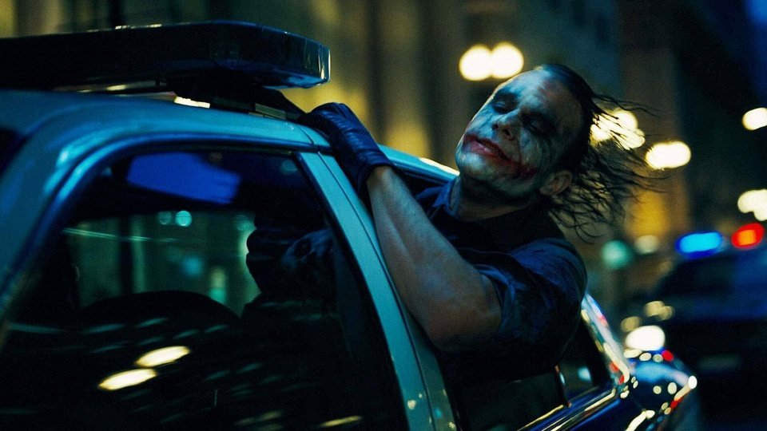
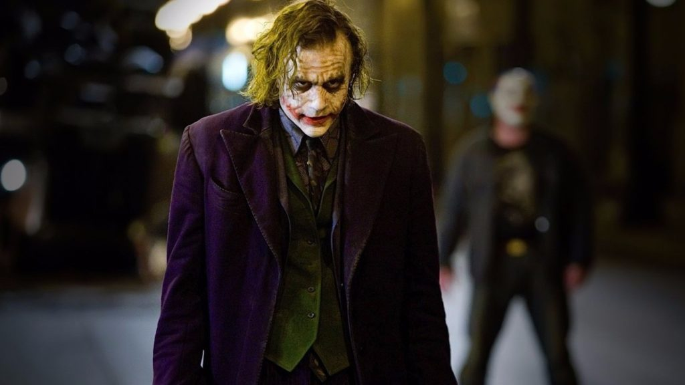

The Dark Knight แบทแมน อัศวินรัตติกาล
เนื้อเรื่อง
แบทแมน อัศวินรัตติกาลเป็นภาพยนตร์แนวซูเปอร์ฮีโร่ อาชญากรรม ระทึกขวัญ เนื้อหาของแบทแมน อัศวินรัตติกาลจะเป็นการเผชิญหน้ากันของแบทแมนและโจ๊กเกอร์อาชญากรสมองใสที่ทำให้ชาวเมืองก๊อธแธมต้องหวาดกลัว นอกจากนั้นยังมีเนื้อหาเกี่ยวกับความเป็นฮีโร่ของแบทแมนซึ่งมีเนื้อหาที่ซับซ้อนและผสมดราม่าไว้มากมาย
ด้วยความช่วยเหลือของผู้หมวด จิม กอร์ดอน และอัยการเขต ฮาร์วีย์ เดนท์ แบทแมนมุ่งมั่นที่จะทำลายล้างองค์กรอาชญากรรมในก็อตแธมให้สิ้นซาก การทำงานแบบสามทหารเสือดูเหมือนจะสัมฤทธิผล แต่ไม่ช้าพวกเขากลับพบว่าตกเป็นเหยื่อของจอมอาชญากรอย่างโจ๊กเกอร์ ผู้ซึ่งทำให้ก็อตแธมต้องตกอยู่ในความสับสนและบีบบังคับให้อัศวินดำต้องเฉียดเข้าไปใกล้เส้นแบ่งระหว่างวีรบุรุษและวายร้ายมากยิ่งขึ้น
การผลิตและกำกับ
แบทแมน อัศวินรัตติกาล (The Dark Knight) เป็นภาพยนตร์แนวซูเปอร์ฮีโร่ อาชญากรรม ระทึกขวัญ และเป็นภาพยนตร์ในชุดแบทแมนลำดับที่ 6 เข้าฉายในสหรัฐอเมริกาเมื่อปี ค.ศ. 2008 ร่วมอำนวยการสร้าง ร่วมเขียนบทและกำกับโดย คริสโตเฟอร์ โนแลน นำแสดงโดย คริสเตียน เบล เนื้อหาของแบทแมน อัศวินรัตติกาลจะเป็นการเผชิญหน้ากันของแบทแมนและโจ๊กเกอร์อาชญากรสมองใสที่ทำให้ชาวเมืองก๊อธแธมต้องหวาดกลัว นอกจากนั้นยังมีเนื้อหาเกี่ยวกับความเป็นฮีโร่ของแบทแมนซึ่งมีเนื้อหาที่ซับซ้อนและผสมดราม่าไว้มากทำให้ได้รับคำวิจารณ์ที่ดีจากหลายสำนัก ภาพยนตร์เรื่องนี้ยังเป็นผลงานการแสดงภาพยนตร์ฟอร์มยักษ์ครั้งสุดท้ายของ ฮีธ เลดเจอร์ ผู้รับบทเป็นโจ๊กเกอร์ซึ่งเสียชีวิตก่อนที่ภาพยนตร์จะออกฉาย